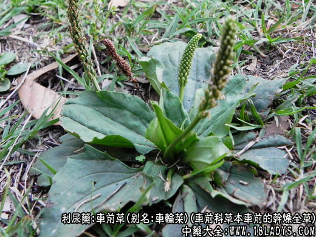
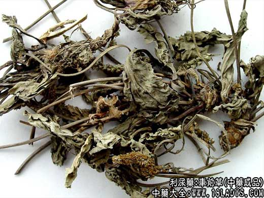
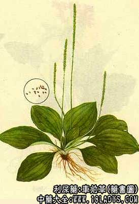

别名：车轮菜、猪肚菜、灰盆草。
来源：为车前的干燥全草，均为野生。
性状鉴别：全草干燥后叶片皱缩卷曲呈团状，灰绿色，花茎短细形如鼠尾，常带有未开放幼嫩花苞。气微，味微苦。
以茎叶幼嫩，灰绿色无杂草者为佳。
炮制：切段生用。
性味：甘、寒。
归经：入小肠、大肠经。
功能：利尿通淋、清血热。
主治：小便癃闭、尿血、淋病、鼻衄、吐血、血痢等症。
化学成分：含车前草苏和甙类物质，对金黄色葡萄球菌、痢疾杆菌有轻度抑制作用。
药理作用：其功用与车前子基本相同，利尿作用不及车前子，但清热解毒、消炎止血、止泻作用则较强，还有一点的镇咳祛痰作用。
主要功效：
1、治血淋；
2、治慢性气管炎，用量：干品9.4～30g；鲜品60.4～120g。
处方举例：鲜车前草90.4g～120g，水煎，调蜜糖30g，冲服，治湿热下痢（急性肠炎、细菌性痢疾）。
附：动物实验证明车前草能抑制呼吸中枢并有增强粘膜分泌机能，使气管及支气管的分泌增加，故有镇咳祛痰作用。此外，还有利尿降压作用。其煎剂对痢疾杆菌有抑制作用。临床报导可用镇咳祛痰，近用治高血压及细菌性痢疾有效。车前草做成组织疗法浸液，用于慢性支气管炎，效果良好。